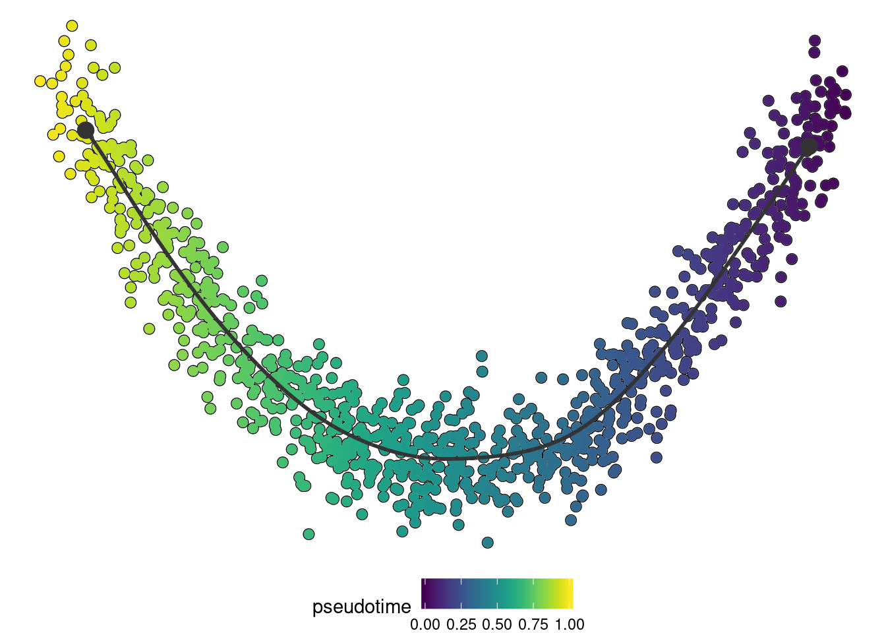

library(dynwrap)
library(dplyr)Once you have wrapped a method using a script and definition, all you need to share your method is a Dockerfile which lists all the dependencies that need to be installed.
We’ll work with the following definition.yml:
method:
id: comp_1
parameters:
- id: component
default: 1
type: integer
distribution:
type: uniform
lower: 1
upper: 10
description: The nth component to use
wrapper:
input_required: expression
input_optional: start_id
and run.py:
#!/usr/bin/env python
import dynclipy
dataset = dynclipy.main()
import pandas as pd
import sklearn.decomposition
# infer trajectory
pca = sklearn.decomposition.PCA()
dimred = pca.fit_transform(dataset['expression'])
pseudotime = pd.Series(
dimred[:, dataset['parameters']['component']-1],
index = dataset['expression'].index
)
# build trajectory
trajectory = dynclipy.wrap_data(cell_ids = dataset['expression'].index)
trajectory.add_linear_trajectory(pseudotime = pseudotime)
# save output
trajectory.write_output(dataset['output'])
Make sure it is executable
chmod +x run.pyAssuming that the definition.yml and run.R are located in current directory, a minimal Dockerfile would look like:
FROM dynverse/dynwrappy:v0.1.0
COPY definition.yml run.py /code/
ENTRYPOINT ["/code/run.py"]dynverse/dynwrappy is here the base image, which contains the latest version of R, python, dynwrap, dyncli and most tidyverse dependencies. For R methods, you can use the dynverse/dynwrapr base. While not required, it’s recommended to start from these base images, because dyncli provides an interface to run each method using the docker container from the command line. As discussed before, wrapping is also a lot easier using dynwrap.
For reproducibility, it’s best to specify the tag of the base image. You can find this these tags on dockerhub: https://hub.docker.com/r/dynverse/dynwrapr/tags.
The Dockerfile then copies over the definition.yml and run.py file inside the “code” directory. Typically, you won’t change the locations of these files, simply to maintain consistency with the rest of the method wrappers included in dynmethods.
Finally, we specify the entrypoint, which is the script that will be executed when the docker is run.
Do not specify this entrypoint using ENTRYPOINT /code/run.R, because this will create issues with specifying command-line arguments.
That’s it! Assuming that you have a functioning docker installation, you can build this container using
docker build -t my_ti_method .## Sending build context to Docker daemon 4.608kB
## Step 1/3 : FROM dynverse/dynwrappy:v0.1.0
## ---> c97bc2021452
## Step 2/3 : COPY definition.yml run.py /code/
## ---> f896e0f64d87
## Step 3/3 : ENTRYPOINT ["/code/run.py"]
## ---> Running in 12f2e4570ee9
## Removing intermediate container 12f2e4570ee9
## ---> 1ddb71c55bbf
## Successfully built 1ddb71c55bbf
## Successfully tagged my_ti_method:latestThis method can now be loaded inside R using dynwrap
method <- create_ti_method_container("my_ti_method")
dataset <- dynwrap::example_dataset
trajectory <- infer_trajectory(dataset, method(), verbose = TRUE)## Executing 'comp_1' on 'example'
## With parameters: list(component = 1L),
## inputs: expression, and
## priors :## Loading required namespace: hdf5r## Input saved to /tmp/RtmpOZDumn/file57646669dc04/ti
## Running method using babelwhale
## Running /usr/bin/docker run -e 'TMPDIR=/tmp2' --workdir /ti/workspace -v \
## '/tmp/RtmpOZDumn/file57646669dc04/ti:/ti' -v \
## '/tmp/RtmpOZDumn/file57644fe30169/tmp:/tmp2' my_ti_method --dataset \
## /ti/input.h5 --output /ti/output.h5
## Output saved to /tmp/RtmpOZDumn/file57646669dc04/ti/output.h5
## Attempting to read in output with hdf5# install dynplot to plot the output
if ("dynplot" %in% rownames(installed.packages())) {
dynplot::plot_dimred(trajectory, color_cells = "pseudotime" , expression_source = as.matrix(dataset$expression))
}
Congratulations! You now have a TI method that can be easily installed anywhere without dependency issues, and that can be included within the whole dynverse pipeline.
So what’s left?
To make a project like this maintainable in the long run, it is important that everytime something is changed, the method is tested to make sure it works fine.
To do this, we first add an example.sh file, which will generate an example dataset that will certainly run without any error with the method. In this case, this example is just the example dataset included in dynwrap.
#!/usr/bin/env Rscript
dataset <- dynwrap::example_dataset
file <- commandArgs(trailingOnly = TRUE)[[1]]
dynutils::write_h5(dataset, file)
You can of course provide your own example data here, but make sure it doesn’t take too long to generate, and not too long for the TI method run.
You can also add extra parameters and a fixed seed to the example data, e.g.: dataset$seed <- 1 and dataset$parameters <- list(component = 42)
Now run the example script and test it:
chmod +x example.sh
./example.sh example.h5## Loading required namespace: hdf5rdataset <- dynutils::read_h5("example.h5")
trajectory <- infer_trajectory(dataset, method())To automate the testing (and building) of containers, you’ll have to use continuous integration. We use travis-ci for this, a free service for open-source projects. Because the exact code to use this continuous integration requires some manual steps, we suggest you create an issue at dynmethods so that we can help you further. If you’re really adventurous, you can have a look at some of our .travis.yml files, e.g.: https://github.com/dynverse/ti_paga/blob/master/.travis.yml
Once the continuous integration works, you’re method is ready to be included in dynmethods!